Descriptiontop
The New VIMMI Webpage Prototype (NVWP) is a Project developed by Francisco Maria Calisto during the VIMMI Summer Internship of 2015. VIMMI is one of the research groups from INESC-ID that does research in novel user interaction paradigms and applications for Design and Manufacturing applications. The Project aims to develop a new digital platform giving to the group the opportunity to disclose news, publications and projects.
Access WordPress Dashboardtop
From here you will be able to access to the WordPress Dashboard where is all Platform Back office.
The LogIn information was sent to your E-Mail.
Please contact Professor Joaquim Jorge or Professor Daniel Gonçalves if you need access and help.
How to Login?
To login you just need the next 4 steps:
1) Access to the link;
2) Insert the Username sent to your E-Mail address;
3) Insert the Password sent to your E-Mail address;
Optional: you can mark Remember Me as optinal if you want to save this Log In session.
4) Press Log In.
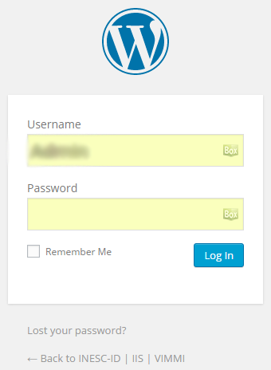
What does it look?
Now you are Loged In and we will have the next aspect:
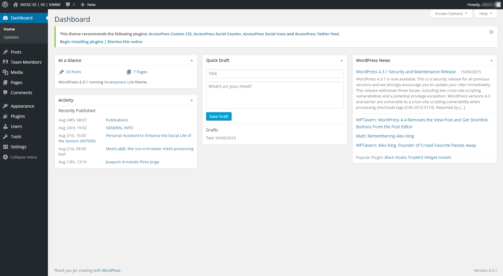
Now the second thing you should do is create and manage the Users and Team Members.
How to create a user?
To login you just need the next steps:
1) On left menu, press Users;
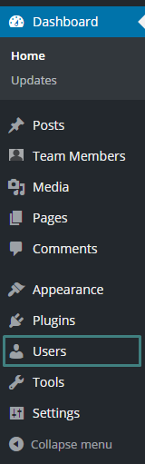
2) And then press Add New;
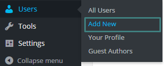
3) Now please fill the fields:
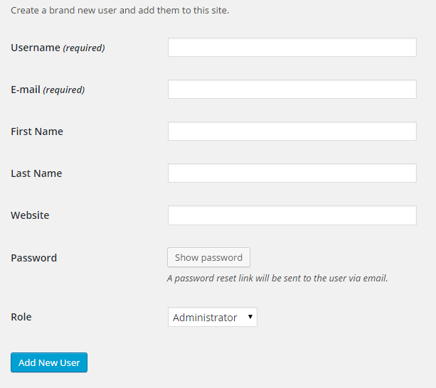
4) Press Password;
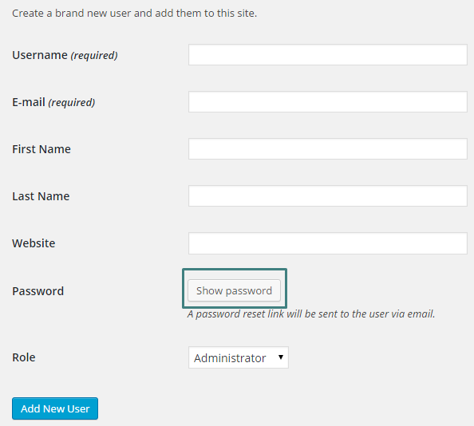
5) Change the Password fields;
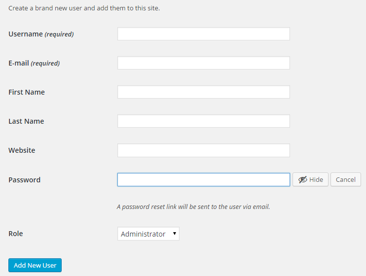
6) Choose the Role;
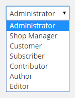
7) Press Add New User;
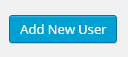
How to add a new Team Member?
You can now associate your created User to the Team Member with all of Member information.
1) On left menu, you will see Team Members;
2) And then press Add New Member;
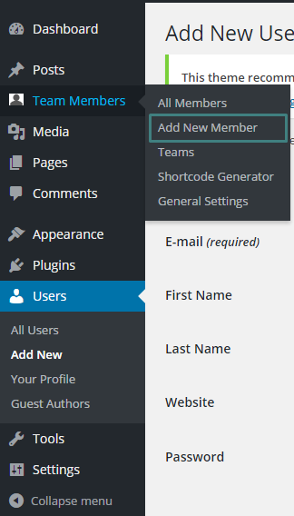
3) Now please fill the Name field with your First Name and Surname:
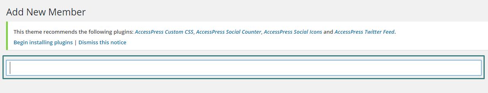
4) Next you will need to associate your User to your Team Type of Role;
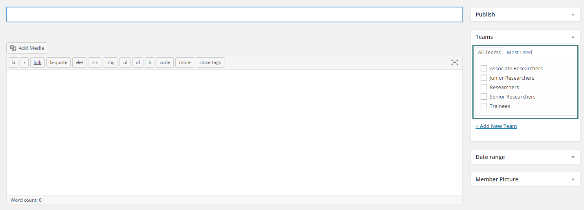
5) Please insert on the next text box your Personal details, with a short description about yourself;
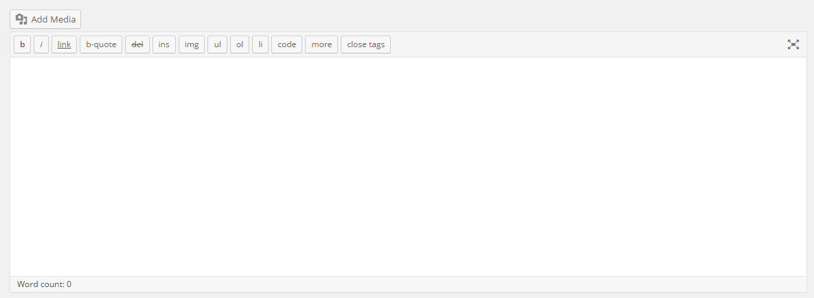
6) Again please insert on the next text box your Personal Information on the fields;
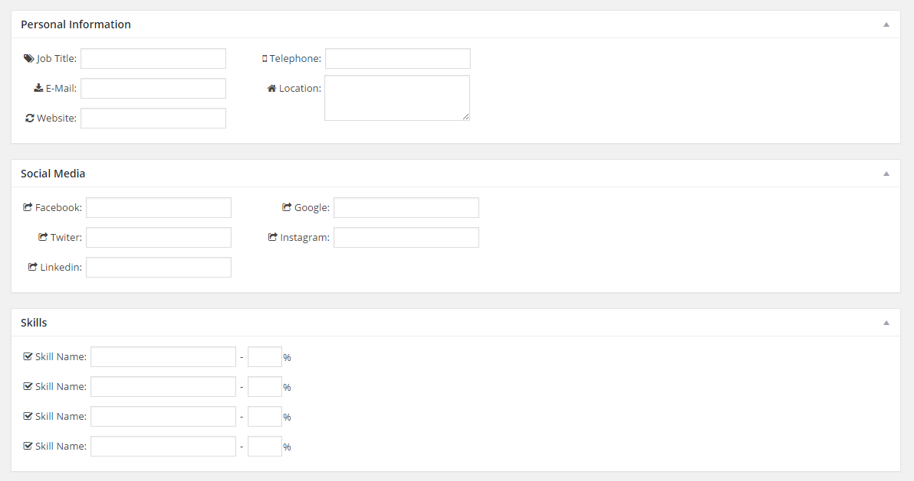
7) Press on Selected an correlated Author menu and choose your User created by you;
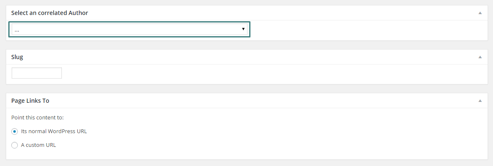
Theme Instructionstop
For this project it was used the AccessPress Lite Theme and you can find more documentation about Documentation/Theme Instruction – AccessPress Lite page.